Primeros pasos#
En el menú lateral izquierdo va a encontrar todas las opciones que usted va a poder realizar en el aplicativo de Persey.

En el menú lateral izquierdo va a encontrar todas las opciones que usted va a poder realizar en el aplicativo de Persey.
Aquí podras guiarte paso a paso para hacer manipulación de los parametros de nomina electronica
En esta sección se define si un concepto aparecerá o no en el reporte de nómina.
Si el concepto está en estado “Visible”, se mostrará en el reporte. Si está en “No visible”, no será incluido.
Se recomienda activar solo los conceptos necesarios para mantener un reporte claro y organizado.
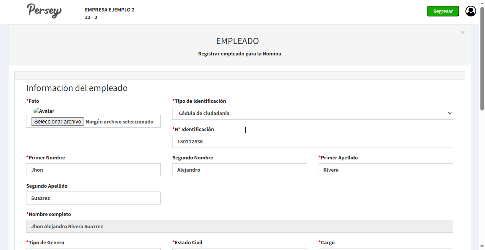
En esta sección se realiza el registro de los empleados que harán parte de la nómina. Es necesario diligenciar la información personal, laboral y bancaria para garantizar una correcta liquidación.
Entre los datos principales que se deben registrar se encuentran:
Es importante que la información sea correcta y esté completa, ya que estos datos son utilizados por el sistema para calcular automáticamente la nómina.
En esta sección se gestionan los conceptos de nómina que intervienen en el cálculo de los pagos a los empleados.
Los conceptos corresponden a los valores que hacen parte de la liquidación, como salarios, auxilios, horas extras, recargos y deducciones.
Solo los conceptos en estado activo serán tenidos en cuenta en la liquidación de nómina.
Una correcta configuración de los conceptos permite que el sistema calcule automáticamente los valores de devengados y deducciones.
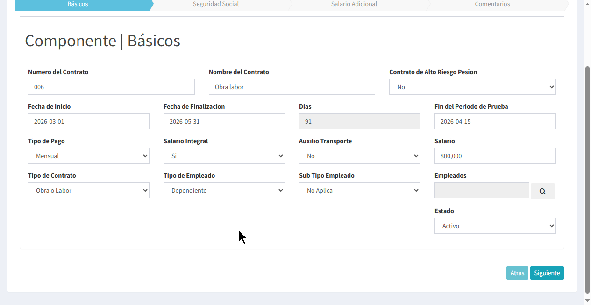
En esta sección se registran los contratos de los empleados, los cuales contienen la información necesaria para la correcta liquidación de la nómina.
El registro del contrato se realiza en varias etapas:
Es fundamental que la información del contrato sea correcta, ya que el sistema utiliza estos datos para calcular automáticamente la nómina del empleado.
En esta sección se configuran los talonarios que serán utilizados para la generación de los comprobantes de nómina.
El talonario permite definir la numeración y estructura de los documentos generados por el sistema.
Esta configuración es necesaria para garantizar un control adecuado de los comprobantes generados en la nómina.
En esta sección se gestionan los cargos o roles que pueden ser asignados a los empleados dentro de la empresa.
Los cargos permiten clasificar a los empleados según sus funciones, facilitando la organización y administración de la información en la nómina.
Solo los cargos en estado activo estarán disponibles para ser asignados a los empleados.
En esta sección se gestionan los departamentos de la empresa que serán asociados a los empleados dentro del sistema de nómina.
Los departamentos permiten organizar a los empleados según el área a la que pertenecen, facilitando la administración y generación de reportes.
Solo los departamentos en estado activo estarán disponibles para ser asignados a los empleados.
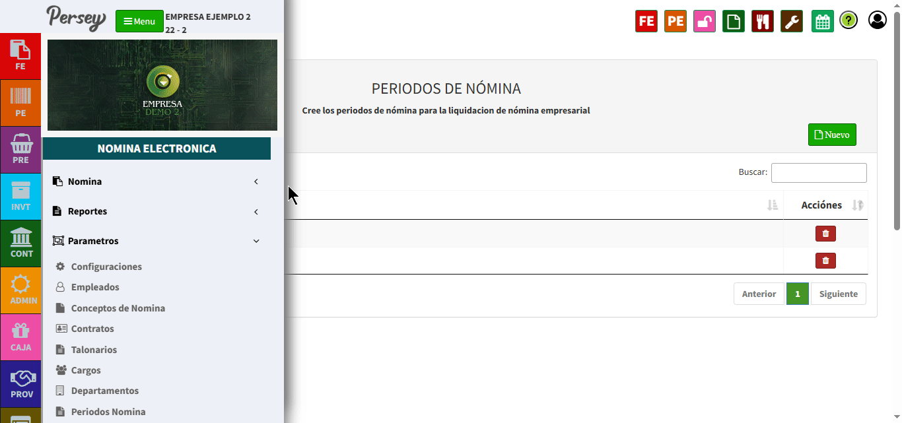
En esta sección se crean los períodos de nómina que serán utilizados para realizar las liquidaciones.
El sistema permite generar automáticamente los períodos al seleccionar el año correspondiente.
Una vez seleccionado el año, el sistema generará los períodos necesarios (mensuales o según configuración), los cuales estarán disponibles al momento de liquidar la nómina.
Es necesario contar con los períodos creados antes de realizar cualquier proceso de liquidación.
En esta sección se asignan los conceptos de nómina a cada empleado, los cuales serán utilizados en el cálculo de la liquidación.
El sistema permite agregar o quitar conceptos de forma sencilla mediante arrastrar y soltar entre las listas disponibles y asignadas.
Los conceptos se organizan en categorías como devengados, deducciones y otros, facilitando su gestión.
Para asignar un concepto, se debe arrastrar desde la lista de conceptos disponibles hacia la lista del empleado. Para eliminarlo, se realiza el proceso inverso.
Una correcta asignación de conceptos garantiza que el cálculo de la nómina sea preciso para cada empleado.
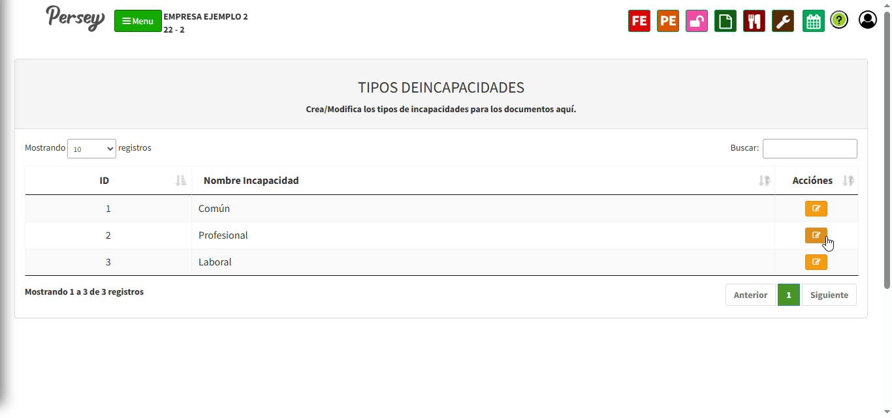
En esta sección se configuran las reglas para el manejo de incapacidades dentro de la nómina.
Las incapacidades permiten definir cómo se calculará el pago al empleado en caso de ausencias por motivos de salud u otras condiciones.
Es posible crear diferentes reglas y reducciones según el tipo de incapacidad y las condiciones definidas.
Una correcta configuración garantiza que los valores de incapacidades se calculen adecuadamente dentro de la liquidación de nómina.
Permite generar y gestionar los procesos de liquidación por períodos, facilitando el cálculo detallado de cada empleado de acuerdo con sus condiciones contractuales.
Para generar una liquidación de nómina, el usuario debe seguir los siguientes pasos:
El sistema calculará automáticamente los valores de devengados, deducciones y total a pagar según la configuración de cada empleado.
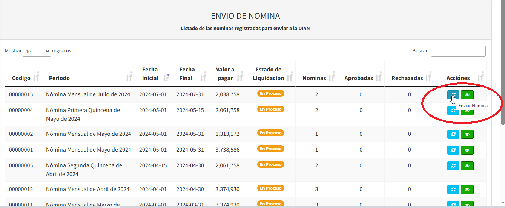
En esta sección se realiza el envío de las nóminas previamente liquidadas a la DIAN para su validación.
El sistema muestra un listado de las nóminas generadas, junto con su información principal:
Para realizar el envío, se debe seleccionar la opción correspondiente en la columna de acciones.
Una vez enviada, la DIAN validará la información y el sistema actualizará el estado indicando si fue aprobada o rechazada.
Es importante verificar que la nómina esté correctamente liquidada antes de realizar el envío.
Aquí podras guiarte paso a paso como generar reportes
En esta sección se pueden consultar y generar los reportes de las nóminas liquidadas en el sistema.
El reporte muestra la información consolidada de cada período de nómina, facilitando la revisión y control de los pagos realizados.
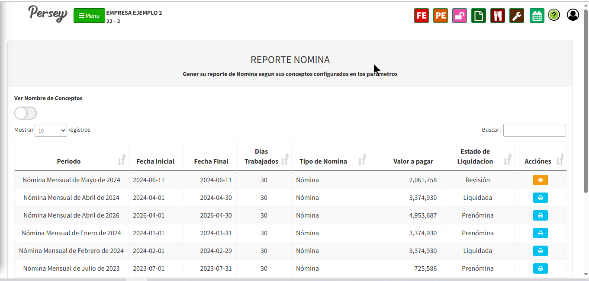
Desde la columna de acciones, el usuario puede visualizar o descargar el reporte correspondiente.
El sistema permite activar la opción de visualización de nombres de conceptos para obtener un mayor detalle en el reporte.
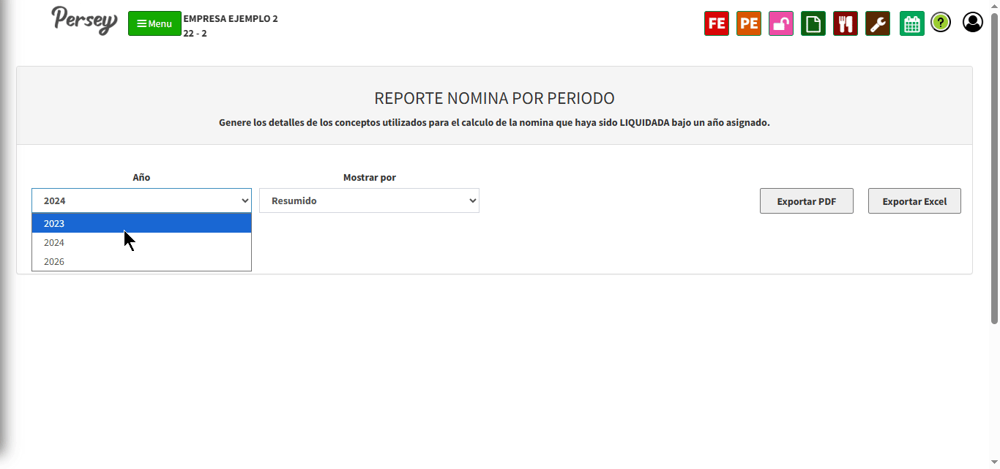
En esta sección se generan reportes consolidados de nómina por período, permitiendo visualizar la información de las nóminas liquidadas en un año específico.
El usuario puede seleccionar los siguientes filtros:
El sistema generará un reporte que incluye información como:
El reporte puede ser exportado en diferentes formatos:
Este reporte facilita el análisis general de la nómina y el control de los pagos realizados durante el período seleccionado.
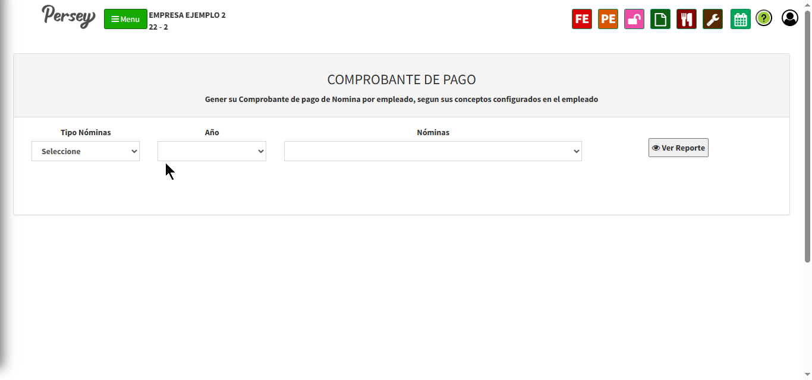
En esta sección se generan los comprobantes de pago individuales de los empleados, según la nómina previamente liquidada.
El usuario debe seleccionar los siguientes filtros:
Una vez seleccionados los filtros, el sistema mostrará el listado de empleados con la siguiente información:
Desde la columna de acciones, el usuario puede generar o visualizar el comprobante de pago individual de cada empleado.
Este comprobante sirve como soporte del pago realizado y puede ser utilizado para fines administrativos o legales.
Aquí podras guiarte paso a paso como generar documentos
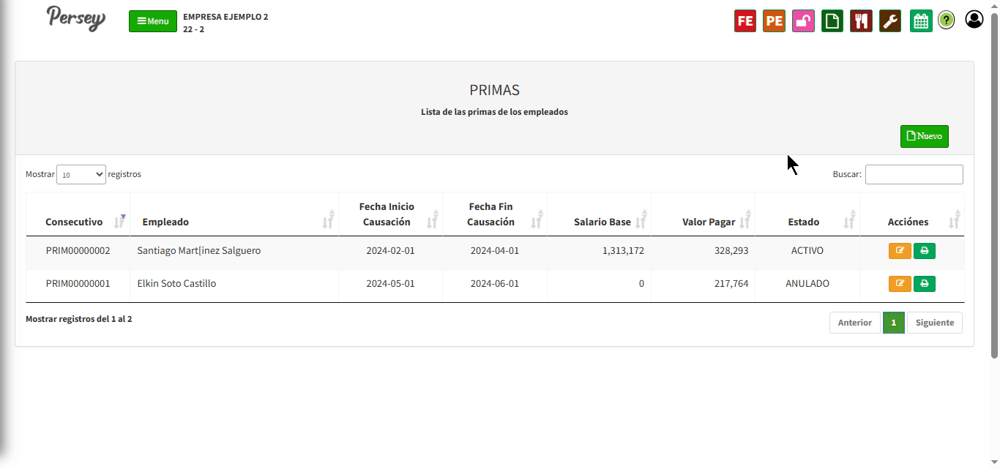
En esta sección se generan las primas de los empleados, de acuerdo con el período seleccionado.
El usuario debe ingresar la siguiente información:
Al hacer clic en el botón “Agregar”, el sistema calculará automáticamente la información correspondiente al período, incluyendo:
El sistema mostrará el total de la prima calculada, permitiendo registrar observaciones adicionales si es necesario.
Finalmente, se debe definir el estado del documento y guardar la información para completar el proceso.
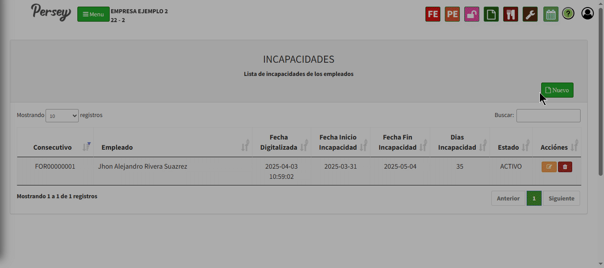
En esta sección se registran y gestionan las incapacidades de los empleados, permitiendo calcular los valores correspondientes según las reglas configuradas previamente.
Para generar una incapacidad, el usuario debe ingresar la siguiente información:
Al hacer clic en el botón “Evaluar”, el sistema calculará automáticamente:
El sistema mostrará el detalle de la incapacidad tanto de forma general como por períodos, permitiendo una mejor visualización del cálculo.
Adicionalmente, se pueden registrar observaciones relacionadas con la incapacidad.
Una correcta gestión de incapacidades garantiza que los valores se reflejen adecuadamente en la liquidación de nómina.
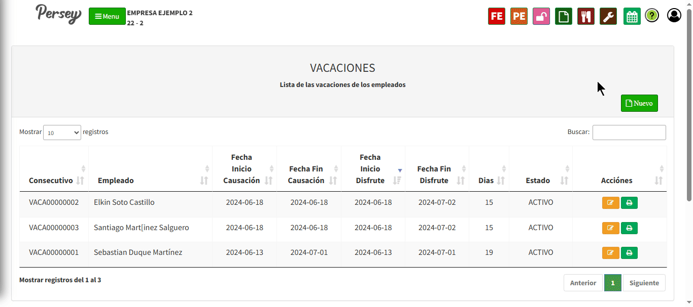
En esta sección se gestionan las vacaciones de los empleados, permitiendo calcular los valores correspondientes según los días de descanso.
Para registrar las vacaciones, el usuario debe ingresar la siguiente información:
El sistema calculará automáticamente:
También es posible registrar observaciones adicionales relacionadas con el período de vacaciones.
Una correcta gestión de las vacaciones permite llevar control sobre los días disfrutados y garantizar un cálculo adecuado en la nómina.